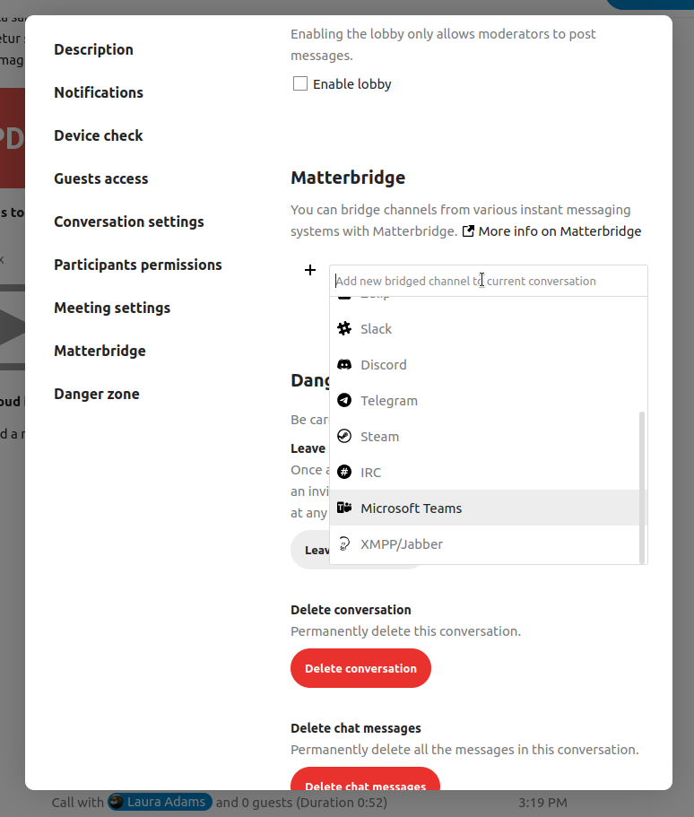

Funcionalidades avançadas do Talk
O Nextcloud Talk tem diversas funcionalidades avançadas que os usuários podem achar úteis.
Matterbridge
A integração do Nextcloud Talk com o Matterbridge permite a criação de ‘pontes’ entre conversas no Talk e conversas em outros serviços como o MS Teams, Discord, Matrix e outros. Você pode encontrar uma lista de protocolos suportados na página do Matterbridge no Github
Um moderador pode adicionar uma conexão Matterbridge nas configurações de conversa.
Cada uma das pontes tem sua própria necessidade em termos de configuração. A maioria das informações está disponível no wiki do Matterbridge e pode ser acessada por meio do menu `` mais informações`` no menu `` … ``. Você também pode `acessar o wiki diretamente. <https://github.com/42wim/matterbridge/wiki> `_
Saguão
O sagão permite que você mostre uma tela de espera a visitantes até que a chamada comece. Isso é ideal para webinários com participantes externos, por exemplo.

Você pode escolher deixar participantes entrarem em um horário específico, ou quando você liberar o saguão manualmente.
Comandos
Nextcloud permite aos usuários executar ações usando comandos. Um comando normalmente se parece com:
/wiki aeroportos
Administradores podem configurar, habilitar e desabilitar comandos. Usuários podem usar o comando ajuda``(`ou `help) para descobrir os comandos disponíveis.
/ajuda

Encontre mais informações na documentação administrativa do Talk .
Talk de Arquivos
No aplicativo Arquivos você pode conversar sobre arquivos usando a barra lateral, e até mesmo fazer uma chamada enquanto edita. Você precisa primeiro entrar no chat.


Você pode então ligar ou falar por chat com outros participantes, mesmo quando você começar a editar o arquivo.

No Talk, uma conversa será criada para o arquivo. Você pode conversar de lá, ou voltar para o arquivo usando o menu ... no canto superior-direito.

Crie tarefas a partir do chat ou compartilhe tarefas no chat
Se o aplicativo Deck estiver instalado, você pode usar o menu ... de uma mensagem no chat e torná-la uma tarefa no Deck.


A partir do Deck você pode compartilhar tarefas numa conversa de chat.